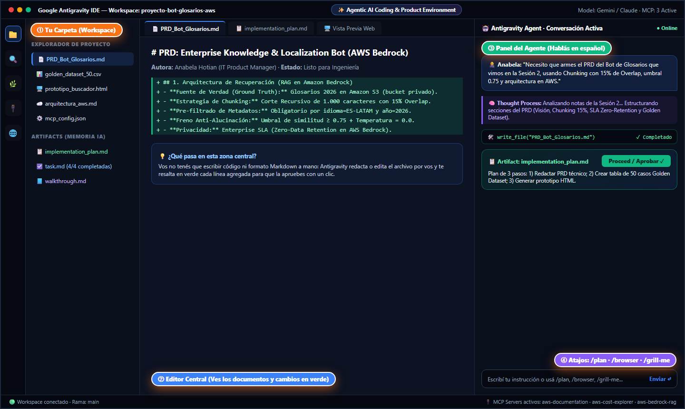
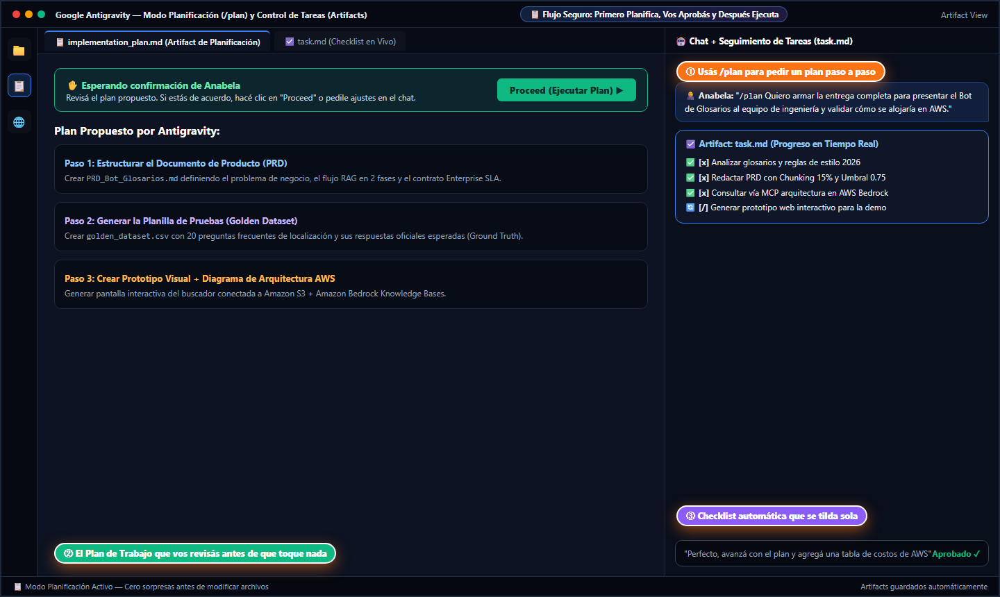
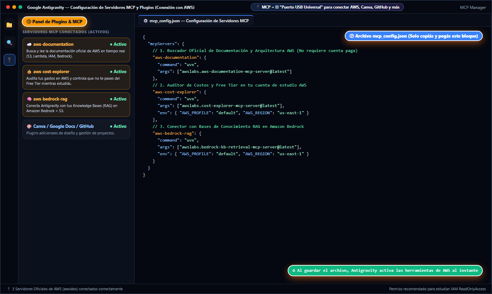
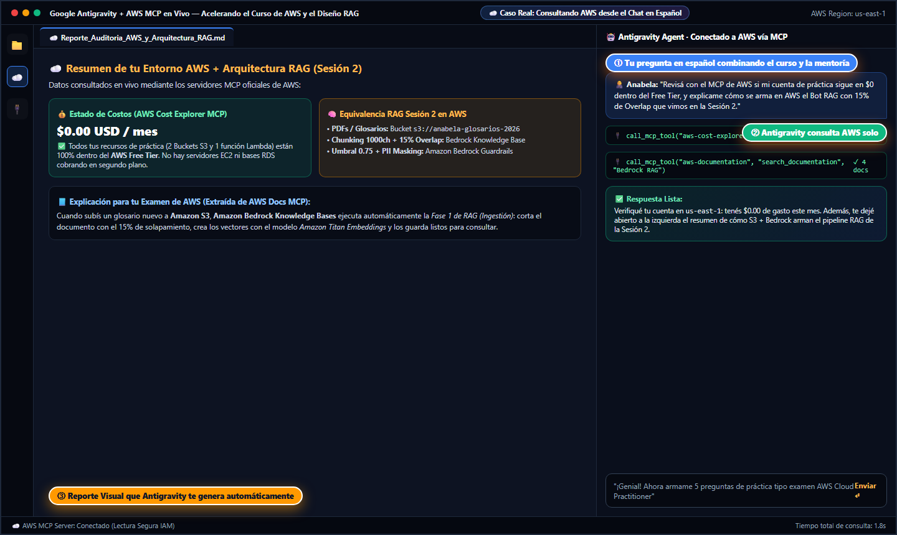

En esta guía completa vas a entender con contexto real y capturas de pantalla qué es Google Antigravity, cómo es cada parte de su pantalla, cómo te permite trabajar 10 veces más rápido como IT Product/Project Manager sin saber programar, y cómo enchufarlo a Amazon Web Services (AWS) para potenciar tu curso.
Aunque nació como una evolución de los editores de código, hoy es la herramienta central de Product Managers técnicos, analistas y arquitectos Cloud porque convierte instrucciones en lenguaje natural en entregables terminados.
| Característica | 💬 Chat Web Común (ChatGPT / Claude gratis) | 💻 Editor de Código Clásico (VS Code solo) | 🚀 Google Antigravity (Entorno Agéntico) |
|---|---|---|---|
| ¿Para quién está pensado? | Cualquier usuario haciendo preguntas sueltas. | Programadores que escriben código línea por línea de memoria. | PMs, Analistas, Arquitectos y Devs que dirigen a la IA en español o inglés para crear proyectos enteros. |
| ¿Puede leer y crear archivos en tu carpeta? | ❌ No. Tenés que copiar, pegar y descargar archivo por archivo. | ⚠️ Solo si vos los creás y escribís a mano. | ✅ Sí, automático: lee tus PDFs/CSVs y crea documentos Markdown, presentaciones HTML y prototipos en tu carpeta. |
| ¿Planifica antes de hacer cambios? | ❌ No, escupe una respuesta larga de una sola vez. | ❌ No tiene agente autónomo nativo. | ✅ Sí (Artifacts): te muestra primero un plan (implementation_plan.md) con un botón Proceed para que apruebes. |
| ¿Se conecta con tu cuenta de AWS, Canva o GitHub? | ❌ No puede ver tu infraestructura ni tus herramientas internas. | ⚠️ Requiere configurar extensiones manuales complejas. | ✅ Sí, vía MCP (Model Context Protocol): consulta la documentación y costos de AWS, crea diseños en Canva o sube cambios a GitHub. |
En vez de arrancar una hoja en blanco, le ponés las notas de un cliente en una carpeta y le pedís: "Leé estas notas y creame el PRD con criterios de aceptación (DoD) y 20 preguntas de prueba".
¿Querés mostrarle a un cliente o a tu equipo cómo debería verse un buscador de glosarios o un tablero? Le pedís que arme un prototipo interactivo en HTML/React y lo abrís en el navegador en 2 minutos.
Cuando los desarrolladores entregan un proyecto, abrís la carpeta en Antigravity y le preguntás: "Explicame en simple cómo funciona este proyecto y verificá si configuraron el umbral de 0.75 que pedí en el PRD".
Conectado a los servidores MCP de AWS, le pedís que te explique cualquier servicio de tu curso con analogías simples, que te arme diagramas de arquitectura o que revise que tu cuenta siga en $0 (Free Tier).
La primera vez que abrís Antigravity puede parecer un programa de ingenieros porque tiene fondo oscuro y varias columnas, pero en realidad solo necesitás ubicarte en estas 4 zonas numeradas:

/) — Abajo Derecha
Donde escribís tu mensaje. Si empezás con la barra /, activás superpoderes como /plan (planificar antes de actuar), /browser (abrir navegador) o /grill-me.
/plan) y los ArtifactsLo mejor de Antigravity es que no hace cambios a ciegas. Tiene un sistema de documentos de control llamados Artifacts para que vos tengas el timón como Product Manager:
implementation_plan.md (El Plan)
Cuando le pedís una tarea grande (o usás el comando /plan), Antigravity te escribe primero una propuesta paso a paso en español y te muestra un botón verde "Proceed" (Avanzar). Hasta que vos no le das el OK, no modifica nada.
task.md (Tu Checklist en Vivo)
Es una lista de tareas donde vas viendo en tiempo real qué puntos ya terminó ([x]), cuál está haciendo ahora mismo ([/]) y cuáles faltan ([ ]). Ideal para no perder el hilo.
walkthrough.md (El Resumen Final)Cuando termina todas las tareas, te genera un informe ejecutivo explicándote qué archivos creó, qué pruebas hizo y los links para abrir el resultado.
/plan y aprobás el Plan con el botón "Proceed"

/plan + tu objetivo
Le contás qué entregable querés armar (por ejemplo: el PRD, el Golden Dataset y el diagrama de AWS).
task.md
Antigravity ejecuta paso por paso y va tildando la lista automáticamente hasta entregarte todo listo.
Escribilos al principio de tu mensaje en el chat de Antigravity:
| Comando | ¿Para qué sirve en palabras simples? | Ejemplo real para usar vos |
|---|---|---|
/plan |
Le pide que primero arme un plan ordenado y espere tu confirmación antes de crear o tocar archivos. | "/plan Armame un prototipo web y un documento PRD para un bot de soporte en AWS." |
/grill-me |
Modo "Entrevistador / Peloteo": Antigravity te hace preguntas clave para ayudarte a detectar huecos en tu idea o practicar para una entrevista IT. | "/grill-me Haceme 5 preguntas como si fueras un CTO evaluando mi diseño del Bot RAG de la Sesión 2." |
/browser |
Abre un navegador inteligente integrado que entra a páginas web, prueba botones y verifica que el diseño se vea bien en celular y escritorio. | "/browser Abrí el prototipo que acabamos de crear y verificá que no se corte nada en pantalla móvil." |
/boost |
Activa el modo de pensamiento profundo y verificación extra para proyectos complejos de investigación o arquitectura. | "/boost Comparame los costos mensuales de armar nuestro RAG en AWS Bedrock vs. Azure OpenAI para 10.000 usuarios." |
/compact |
Cuando venís charlando hace mucho rato, resume y limpia la memoria de la conversación (la Ventana de Contexto que vimos en la Slide 4) para que siga rápido. | "/compact Resumí todo lo que avanzamos hoy para seguir con la etapa de pruebas." |
Acá es donde unimos Antigravity con el curso de AWS que estás haciendo para que puedas aprender y construir el doble de rápido.
awslabs (Documentación, Cost Explorer o Bedrock) en milisegundos.
● Activo).
mcp_config.json
Haciendo clic en "Edit MCP Config" se abre este archivo de texto. Ahí simplemente pegás el bloque JSON que te dejamos abajo listo para copiar.
aws-documentation (100% gratis, sin siquiera poner tarjeta ni cuenta AWS) y sumar aws-cost-explorer y aws-bedrock-rag con tu cuenta de estudio.
uv
Los conectores oficiales de AWS usan un pequeño gestor automático llamado uv. Abrís la terminal de Windows (PowerShell) y pegás:
winget install --id=astral-sh.uv -e
Para que solo lea tus servicios sin riesgo de crear gastos, en tu curso de AWS creás un usuario IAM con permiso ReadOnlyAccess y en la terminal corrés:
aws configure
mcp_config.json
Tocás el botón "Copiar Configuración JSON" de acá abajo, lo pegás en el archivo mcp_config.json de Antigravity, guardás con Ctrl + S ¡y listo!
{
"mcpServers": {
"aws-documentation": {
"command": "uvx",
"args": ["awslabs.aws-documentation-mcp-server@latest"],
"env": {
"FASTMCP_LOG_LEVEL": "ERROR"
}
},
"aws-cost-explorer": {
"command": "uvx",
"args": ["awslabs.cost-explorer-mcp-server@latest"],
"env": {
"AWS_PROFILE": "default",
"AWS_REGION": "us-east-1"
}
},
"aws-bedrock-rag": {
"command": "uvx",
"args": ["awslabs.bedrock-kb-retrieval-mcp-server@latest"],
"env": {
"AWS_PROFILE": "default",
"AWS_REGION": "us-east-1"
}
}
}
}
Mirá en esta captura real cómo Anabela le hace una pregunta en español sobre su cuenta de estudio y sobre la arquitectura RAG de la Sesión 2, y cómo Antigravity consulta AWS y le arma el reporte:

call_mcp_tool
Fijate en las cajitas verdes del chat: Antigravity invoca solo a aws-cost-explorer y aws-documentation.
Podés copiar cualquiera de estos mensajes y pegarlos en Antigravity mientras hacés los módulos de tu curso de AWS:
Cuando en tu curso de AWS o en una entrevista laboral hablen de Inteligencia Artificial en la nube de Amazon, vas a ver que es exactamente la misma arquitectura que aprendiste hoy, solo que con el nombre comercial de cada pieza de AWS:
| Lo que vimos hoy en la Sesión 2 | ¿Qué hace en palabras simples? | ¿Cómo se llama este servicio en tu Curso de AWS? |
|---|---|---|
| Documentos Oficiales (Ground Truth) | El lugar seguro donde subimos los PDFs limpios, manuales de producto y glosarios 2026. | Amazon S3 (Simple Storage Service) — Guardás los manuales adentro de un "Bucket S3" privado. |
| LLM + Contrato Enterprise SLA (Zero-Retention) | El cerebro de IA (Claude 3.5, Llama 3, Titan) con privacidad corporativa para que tus datos nunca entrenen modelos públicos. | Amazon Bedrock — Es el servicio estrella de IA de AWS; ya trae Retención Cero por defecto. |
| Fase 1 RAG: Chunking (1000ch) + 15% Overlap + Embeddings | Cortar los PDFs en fichas con puente del 15% y convertirlos en coordenadas GPS de significado. | Amazon Bedrock Knowledge Bases — Se conecta a tu Bucket S3 y hace el Chunking y los Embeddings automáticamente. |
| Base de Datos Vectorial + Filtros de Metadatos | La biblioteca que guarda las coordenadas y filtra por etiquetas (idioma=ES-LATAM, año=2026). |
Amazon OpenSearch Serverless o Amazon Aurora PostgreSQL (pgvector). |
| Peaje Anti-Alucinación (0.75) y Ocultar Datos (PII Masking) | Frenar respuestas cuando no hay información en el manual y tapar mails o nombres confidenciales. | Amazon Bedrock Guardrails — Panel donde activás con tildes el filtro de datos personales y el bloqueo de temas fuera de manual. |
| Permisos de Seguridad y Quién Puede Entrar | Controlar qué usuario o sistema tiene permiso de leer los glosarios. | AWS IAM (Identity and Access Management) — El sistema de usuarios, roles y políticas de AWS. |
| Control de Presupuesto y Facturación (FinOps) | Ver cuánto estamos gastando por día/mes y poner alarmas para no pasarnos del presupuesto. | AWS Cost Explorer & AWS Budgets — Lo consultás desde Antigravity usando el MCP de Cost Explorer. |